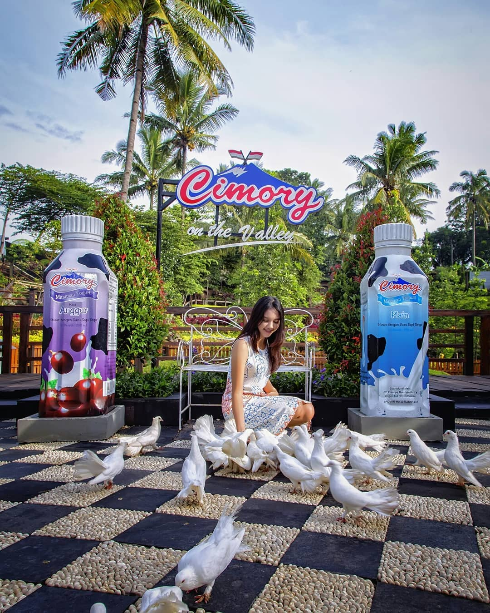
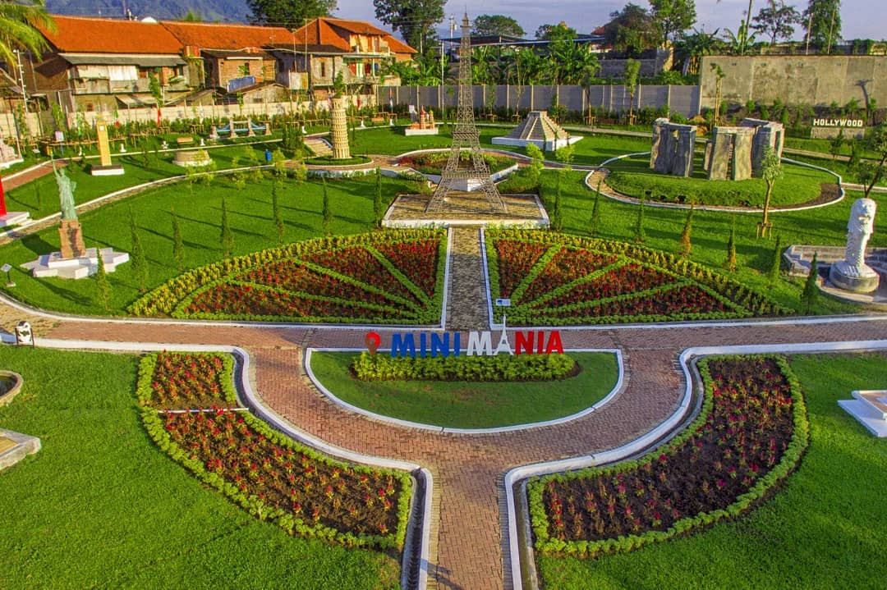
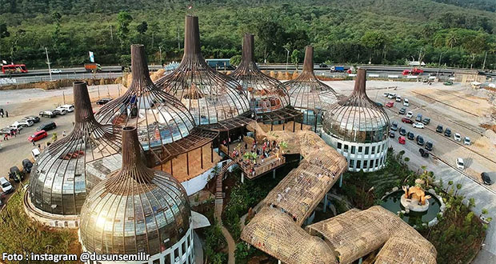
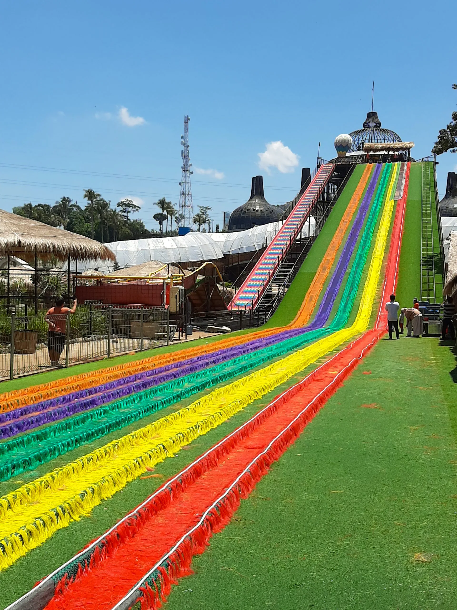
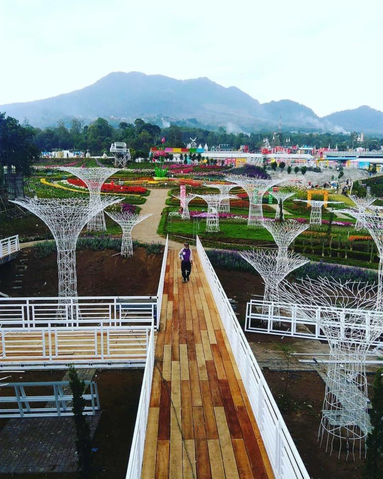
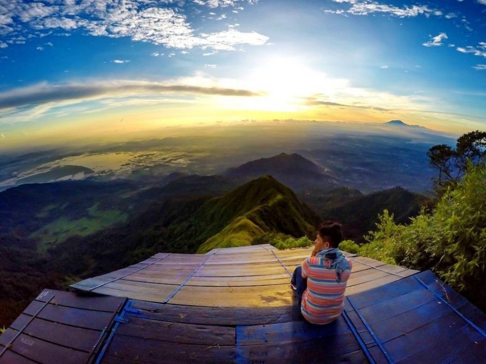
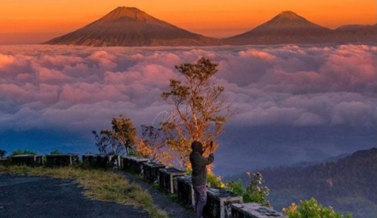
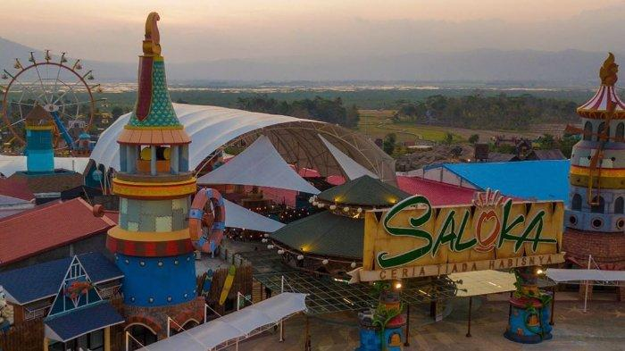
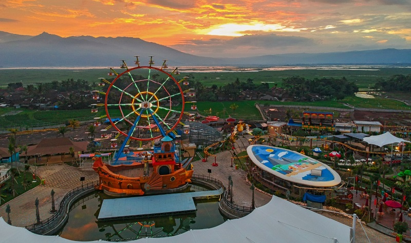

Introduction...
Nih bagi kaum gabuters yang suka dengan mending mending. Bagi kaum gabuters apapn yang diajak kawan bisanya langsung skuy bila denger kata dibayarin namun jika bayar sendiri sendiri langsung deh mulut netizennya keluar mending ini mending itu. Nah daripada komen melulu mending wisata aja apalagi ke spot wisata yang baru booming apalagi bareng ama doi paket lengkap tuh hehe.. Nah untuk kaum yang gaada doi santai kalian bisa ajak kawan kalian kok. Nah wisata sendiri kan tujuannya agar kita tambah bahagia jadi sama siapapun bisa kawan apalagi sama keluarga tercinta pasti akan lebih menyenangkan.
Jadi ada banyak spot wisata yang baru baru booming dan memang sangatlah menarik perhatian kawan apalagi dengan adanya inovasi inovasi spot wahana baru yang menjadikan wisata kita tidak membosankan. Disini aku akan memberikan sedikit rekomendasi tempat wisata yang baru baru ini booming sampe sampe ditutup sementara oleh aparat terkait karena diwaktu pandemi yang harusnya menerapkan prokes la ini prokes malah tidak efektif karena membludaknya pengunjung yang antusias datang untuk berwisata namun pihak pengelola tidak mampu untuk mengatur banyaknya pengunjung jadinya ya malah berwisata melihat orang antre karena saking ramainya hehe…
Tapi eh tapi ya kita patut mengapresiasi juga pihak pengelolanya karena setelah diberi peringatan mereka langsung mengambil tindakan dan memperarui kebijakan secara terus menerus dan mencari efektifnya dimana. Nah kali ini lagi lagi kita akan merekomendasi tempat wisata yang dekat dekat saja dekat rumaku maksudnya hehe lagi-lagi kita ambil sekitaran kabupaten semarang saja kawan nah untuk rinciannya sebagai berikut, eits sebelum itu jangan lupa taati prokes untuk terus menerapkan 3m agar kita selalu aman oke deh lets cekidot...
- Cimory On The Valley
- Dusun Semilir Eco Park
- Taman & Kebun Bunga Celosia
- Puncak Gunung Telomoyo
- Saloka Theme Park

Pertama kita ada cimory on the valley lah berada di gunung dong min kok lembah?! untuk pasnya itu lembah tepat disamping aliran sungai yang bersumber dari gunung ungaran kawan. Nah tempat ini mulanya adalah resto dengan menu sepesial adalah olahan susu nya, lah min tempat nyusu dong?! Ya bisa diilang begitu. Seiring berjalannya waktu kini dibangun taman mini mania kawan didalamnya terdapat kurang lebih 15 replica landmark dari berbagai Negara yang terkenal didunia. Nah namanya mini ya replikanya sekalanya tentunya lebih kecil dari aslinya kawan. Nah bukan karena hal ini saja cimory booming bisa dlihat dari membludaknya pengunjung dihari libur sehingga kadang sampai parker dipinggir jalan hingga menimbulkan kemacetan yang cukup panjang lo kawan hehe padahal sudah ditambah lahan parkir yang luas. nah bukan hanya itu kawan yang membuat tempat ini booming adalah berbagai olahan susunya dan terdapat berbagai macam wahana edukasi untuk anak anak loh jadi akan sangat menarik bila dikunjungi bersama keluarga anda. Nah untuk lokasinya bisa diakses disini kawan. dan untuk info lengkap kawan kawan bisa mengaksesnya disini

Kedua kita ada wisata dusun semilir eco park lah kampung wisata ini min?! ya itu nama dan konsepnya aja bukan kampung wisata sepenuhnya hehe. Nah lokasinya sendiri ada di kecamatan bawen kawan di dalamnya terdapat banyak wahana dan spot foto yang menarik kawan jadi banyak orang yang datang untuk berfoto ala ala selebgram deh hehe… nah wisata ini masih dalam tahap pembangunan loh artinya belum semua dibuka namun pengunjungnya astagfirullah banyak kali tiap hari. Apalagi pas dibukanya wahana baru plosotan pelangi pengunjungnya tambah antusias kawan makin banyak makin bikin macet jalan hehe hingga pernah karena membludaknya pengunjung saat pandemi ini beberapa bulan lalu tepatnya hingga wisata ini ditutup oleh pihak bersangkutan karena dianggap tidak mampu menerapkan prokes karena keramaian kawan hehe.. nah ditempat ini selain ada berbagai wahana juga terdapat resto yang isinya berbagai makanan tradisional dan makanan kekinian yang dijual kawan. Jadi kawan kawan harus tu coba berwisata kemari karena masih banyak hal menarik lainnya. Nah untuk informasi lebih lanjut kawan kawan bisa mengaksesnya disini. Dan untuk lokasinya kawan kawan bisa mengaksesnya disini.

Ketiga kita pindah ke kawasan bandungan tepatnya terletak bawah wisata candi gedong 9 nah taman celosia ini dulunya adalah kebun bunga celosia kawan yang meyuguhkan pemandangan berbagi bunga warna warni nah makin lama makin dibangun makin banyak pula wahananya hampir mirip seperti minimanianya cimory kawan namun untuk berbagai miniatur di wisata ini skalanya lebih besar serta tempatnya sangat luas karena ada 3. Iya 3 tidak salah macem pedagang saja bukak cabang hingga 3 ya memang begitu luasnya dan pertama tama dulu sangat ramai karena antusisame masyarakat untuk mengunjunginya apalagi sebelum pandemi ini ada wahh sama sama bikin macet kayak wisata lainnya hehe namun itulah keseruannya… disini juga terdapat resto serta jajanan ringan yang siap untuk dinikmati kawan nah untuk lokasinya sendiri kawan kawan bisa mengaksesnya disini.

Selanjutnya ke empat kita beralih ke puncak gunung telomoyo tepatnya di daerah banyubiru. Nah wisata ini sebenarnya sudah lama ada namun karena beberapa sebab termasuk akses jalan yang sudah memadai kini menjadi booming kawan. Masa dipuncak gunung aja bisa sampai macet iya itu memang terjadi disini karena antusiasme masyarakat yang belumpernah mengunjunginya dan tertarik dengan keindahan alam yang disuguhkan. Nah untuk wisata ini tiada resto kawan adanya pedangang yang berjualan dipinggirjalan tapi eh tapi dagangannya sangat cocok loh diatas gunung nyruput kopi, diatas gunung makan bakso kan nikmat kali sambil ngelihat pemandangan apalagi sama doi eh wkwk. Nah untuk aksesnya sendiri lebih dianjurkan pakai motor ya kawan mengingat kalau pakai mobil hanya bisa sampai gerbang pos masuk yang kalau mau jalan sangatmenguras tenaga dan tidak recommended hehe untuk lokasinya bisa melalui via banyubiru kearah sepakung nah kawan kawan tidak perlu ragu terkadang ikut *maps malah nyasar nah ini kawan kawan melaju saja kearah banyubiru,sepakung dan nanti sudah ada plang ijo ijo dijalan yang menunjukkan arahnya. Nah jika kalian nyasar bisa tu pakai GPS gunakan penduduk setempat alias bertanya hehe nanti malah dapet jalan yang bagus tanpa nyasar hehe. nah berikut titik puncaknya ada disini.

Terahir ada wisata saloka theme park kawan nah wisata ini adalah salah satu wisata terbesar di jawatengah loh dulunya wisata ini adalah kolamrenang rawapening nah sekarang tetap masih ada namun sudah diupgrade jadi waterboom kawan wahh asik tuh? Ya iya lah. nah konsep dari wisata ini mengugung kearifan lokal legenda baruklinting selain itu terdapat berbagai wahana yang sangat asik untuk dinikmati. Jadi wisata ini bakal jadi ala ala WBL hehe ada waterboom ada taman bermainnya juga. Disisi lain pasti juga ada restonya dengan pemandangan danau rawa pening dengan background gunung wahh asik tuh min. meski wisata ini tidak semembludak sampai bikin macet seperti lainnya namun tetap saja pengunjungnya sangat banyak, namun tidak terlihat membludak karena lahan parkirnya yang sangatluas. Untuk informasi lebih lanjut mengenai saloka kalian bisa mengaksesnya disini. Dan untuk lokasinya bisa dilihat disini.
Kesimpulan~
So itu tadi beberapa tempat wisata yang menurutku booming akir ahir ini tentunya hal ini tidak akan berhenti sampai sini saja mengingat tiap pengelola akan terus mengeluarkan strategi serta inovasi untuk terus membuat pengunjungnya merasa senang dengan berbagai hal baru yang akan datang
Sekedar saran jadi jika ingin bepergian ke tempat wisata yang booming dan ramai minta ampun seperti beberapa contoh diatas ada baiknya kita mengunjunginya dihari biasa selain lebih senggang kita akan lebih bisa menikmati nikmatnya berwisata. Jadi semoga tips diatas dapat bermanfaat. Terima kasih telah menyimaknya, semoga kita semua bisa tetap terjaga dari virus covid-19 ataupun penyakit lain. Stay Safe, Stay Health, Stay Happy.